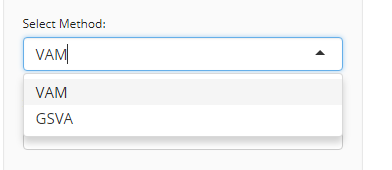
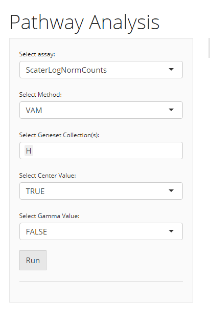
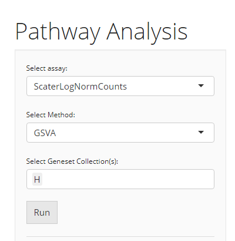

Introduction
VAM [1] and GSVA [2] are popular methods for GSE (Gene Set Enrichment) and allows the identification of changes in pathway activity in RNA-Seq data. Overall, gene sets can be uploaded or selected from the available databases (How to Import Genesets?), and the pathway analysis method can be run on the selected gene sets which can eventually be visualized using Violin plot.
To view detailed instructions on how to use these methods, please select “Interactive Analysis” for using pathway analysis in Shiny application or “Console Analysis” for using these methods on R console from the tabs below:
Workflow Guide
Entry of The Panel
From anywhere of the UI, the panel for pathway analysis can be accessed from the top navigation panel at the circled tab shown below.

The UI is constructed in a sidebar style, where the left-sided sidebar works for setting the parameters and running the pathway analysis, and the right part main panel is for visualization checking.
Run Pathway Analysis
1. Choose An Algorithm

For running any types of pathway analysis, there are always three essential inputs that users should be sure with:
- The data matrix to use - selection input “Select Assay”. In terms of pathway analysis, SCTK always requires a full-sized feature expression data (i.e. assay) as a valid input.
- The pathway analysis method - selection input “Select Method”. All methods supported are listed as options.
- The geneset collection name - selection input “Select Geneset Collection”. All geneset names are listed as options.
After the pathway analysis method is confirmed, the lower part will dynamically switch to the method specific settings.
2. Parameter Settings
VAM

When the selected algorithm is “VAM” , the parameter settings will look like the figure above. The method specific parameters include:
-
center, If True, values will be mean centered when computating the Mahalanobis statistic. -
gamma, If True, a gamma distribution will be fit to the non-zero squared Mahalanobis distances computed from a row-permuted version of the gene expression matrix. The estimated gamma distribution will be used to compute a one-sided p-value for each cell. If False, the p-value will be computed using the standard chi-square approximation for the squared Mahalanobis distance (or non-central if center = FALSE).
GSVA

When the selected algorithm is “GSVA,” no additional parameter settings exist other than the three essential inputs common for both VAM and GSVA.
3. Visualization

The visualization is implemented with a plotting of cell by geneset matrix score.
Detail

The parameter panel for visualization comprises of:
- The result to visualize - selection input “Select Score matrix which you want to plot:”. User should choose one of the data frames produced within the results which they want to visualize.
- The geneset to visualize - selection input “Select Geneset:”. User should choose the geneset from the collection used for running the algorithm.
- The additional condition of grouping the data- selection input “Select Condition(s) of interest to group data (optional)”. User may select a condition to group the data in accordance with the colData.
- Visualization criteria - Boolean input “Boxplot”. If TRUE, will plot boxplots for each violin plot. Default TRUE
- Visualization criteria - Boolean input “Violinplot”. If TRUE, will plot the violin plot. Default TRUE
- Summarize stats - selection input “Select summary parameter”. Adds a summary statistic, as well as a crossbar to the violin plot. Options are “mean” or “median.” Default NULL.
The pathway analysis methods can be easily applied to a SingleCellExperiment (SCE) object. The methods return the same SCE object with results updated in reducedDim slot.
Basic Parameters
For each of the three functions, the common things are:
- The input SCE object -
inSCE. - The user must select the gene sets they would like to upload from
Import Gene Setstab -geneSetCollectionName. - Users need to use
useAssayfor a full-sized expression data.
As for another essential parameter, the data matrix used for running the algorithm is a must. Here, users should notice that:
- For
runVAM(), there are two extra parameters:centerandgamma. Please refer to the function manual pages for the details.
Examples
To demonstrate simple and clear examples, here we use the “PBMC-3k” dataset from “10X” which can be easily imported with SCTK functions.
library(singleCellTK)
sce <- importExampleData("pbmc3k")The preprocessing only includes necessary steps before implementing pathway analysis
Preprocessing
sce <- scaterlogNormCounts(sce, assayName = "logcounts")
sce <- importGeneSetsFromMSigDB(inSCE = sce, categoryIDs = "H", species = "Homo sapiens", mapping = "gene_symbol", by = "rownames")Example with VAM
Method specific parameters
-
center, If True, values will be mean centered when computating the Mahalanobis statistic. -
gamma, If True, a gamma distribution will be fit to the non-zero squared Mahalanobis distances computed from a row-permuted version of the gene expression matrix. The estimated gamma distribution will be used to compute a one-sided p-value for each cell. If False, the p-value will be computed using the standard chi-square approximation for the squared Mahalanobis distance (or non-central if center = FALSE).
# Directly use an assay
sce <- runVAM(inSCE = sce, geneSetCollectionName = "H", useAssay = "logcounts", center = TRUE, gamma = FALSE)Example with GSVA
# Directly use an assay
sce <- runGSVA(inSCE = sce, geneSetCollectionName = "H", useAssay = "logcounts")Results and Visualization
The results generated with either GSVA or VAM are stored in the reducedDims slot of the SCE object.
To visualize the scores for a specific geneset from the geneset collection that is used for running the algorithm:
plotPathway(sce, resultName = "VAM_H_CDF", geneset = "HALLMARK_INFLAMMATORY_RESPONSE")In the example above, "VAM_H_CDF" is the name of the result generated by VAM, where "HALLMARK_INFLAMMATORY_RESPONSE" is a geneset from geneset collection "H", imported at the very beginning.
To get the names of all pathway analysis results:
To get a list of all genesets that a pathway analysis result includes:
getGenesetNamesFromCollection(inSCE = sce, geneSetCollectionName = "H")